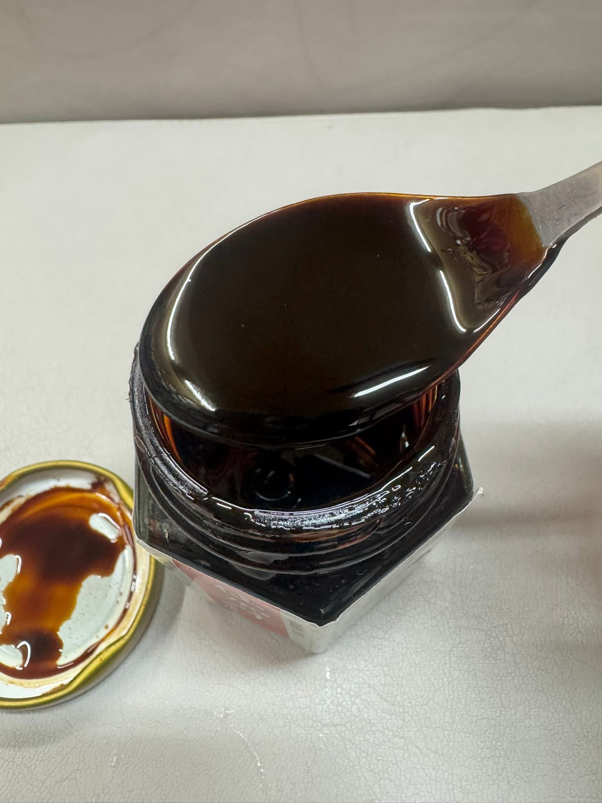

將龜鹿膏與龜鹿湯塊等產品在日常飲食中的搭配方式整理， 例如雞湯、排骨湯與溫熱飲品等常見情境。
龜鹿膏除了直接食用與熱水沖泡，也可依日常飲食習慣搭配溫熱料理。

可依日常飲食習慣， 搭配湯品或其他溫熱料理， 作為日常飲食的一部分。

將龜鹿膏加入溫熱開水攪拌， 可作為較方便的日常食用方式之一。
龜鹿湯塊主要以燉湯方式使用， 適合雞湯、排骨湯與其他日常燉煮料理。

龜鹿湯塊可加入雞湯燉煮， 是較常見的料理方式之一。

亦可加入排骨湯燉煮， 依個人口味與料理習慣調整。
若偏好直接食用，可先看龜鹿膏； 若偏好料理方式，可先看龜鹿湯塊； 若偏好即飲，可看龜鹿飲； 若偏好粉末型態，可看鹿茸粉或龜鹿調飲粉。